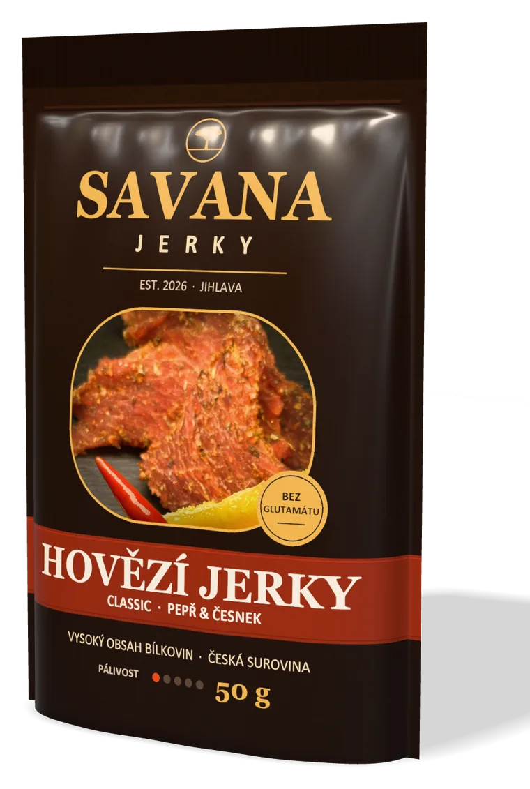
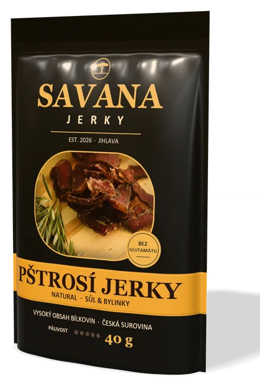
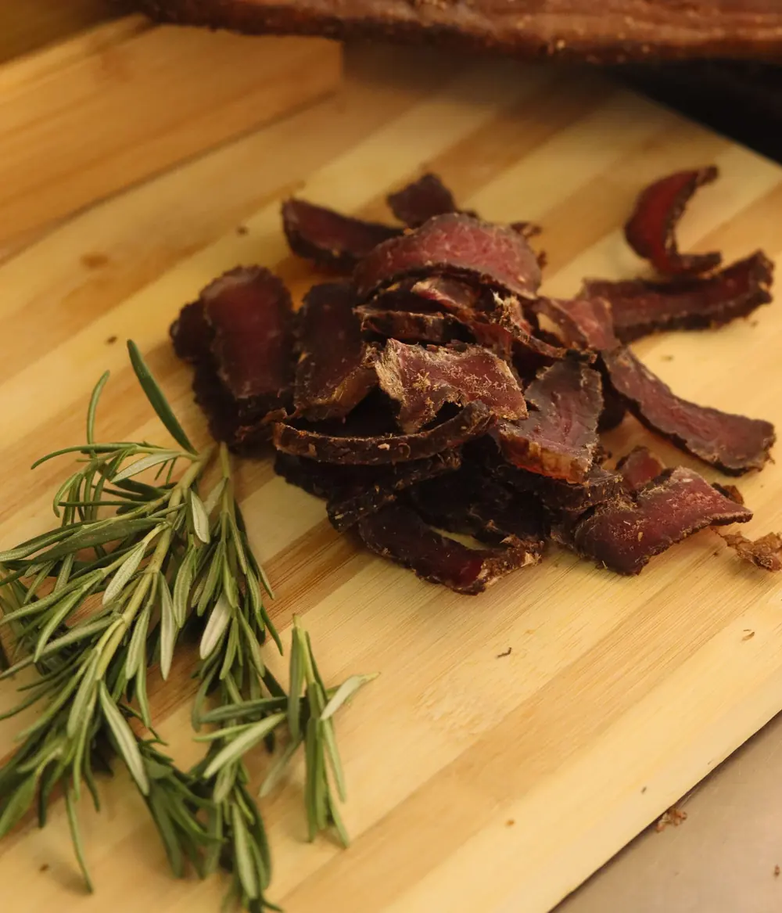

Hovězí50 g
Classic
Černý pepř a česnek. Klasika, která chutná každému.
99 Kč198 Kč / 100 g
Sušené maso · Jihlava · est. 2026
Tence krájené maso z Vysočiny, 24 hodin v marinádě a pomalé sušení. Proteinový snack bez glutamátu a umělých barviv.

Chyťte sáček a otočte ho
01 — Sortiment
Hovězí jerky z kýty českého skotu pro každý den. Pštrosí jerky jako specialita, kterou v běžných obchodech nenajdete.
Černý pepř a česnek. Klasika, která chutná každému.

Chipotle a uzená paprika. Pro ty, kdo mají rádi oheň.

Jen sůl a bylinky. Vynikne čistá chuť libového masa.

Hrubě mletý pepř a rozmarýn. Prémiová specialita.
Ceny včetně DPH. E-shop a prodejní místa připravujeme.
Z 2,5 kg masa vznikne jen 1 kg jerky. Voda odejde, bílkoviny zůstanou. Proto používáme jen kýtu z Vysočiny, pštrosí maso z českých farem a marinádu bez glutamátu.
02 — Jak vyrábíme jerky

03 — Naše specialita
Pštrosí maso je červené maso s chutí jemného hovězího, ale výrazně libovější. Odebíráme ho od českých pštrosích farem a ochucujeme střídmě, aby vynikla přirozená chuť.
Orientační hodnoty syrového pštrosího masa podle USDA FoodData Central.
04 — Výživové hodnoty
Ve 100 g jerky je víc bílkovin než v proteinové tyčince a jen zlomek tuku oproti chipsům. Tady je to černé na bílém.
Orientační hodnoty. Přesné údaje najdete vždy na obalu.
SAVANA JERKY
Jihlava · Kraj Vysočina
Výživové hodnoty / 100 g
| HOVĚZÍ | PŠTROSÍ | |
|---|---|---|
| Energie kcal | 262 | 251 |
| Energie kJ | 1 110 | 1 062 |
| Tuky | 3,8 g | 2,5 g |
| z toho nasyc. | 1,5 g | 0,9 g |
| Sacharidy | 9 g | 2 g |
| z toho cukry | 7 g | 1 g |
| BÍLKOVINY | 48 g | 55 g |
| Sůl | 4,2 g | 4,0 g |
Proteinová tyčinka~30 g
Arašídy~26 g
Bramborové chipsy~6 g
VÍTĚZJERKY
Děkujeme · Bez glutamátu
05 — Kde nás najdete
06 — Časté dotazy
Jerky je tence krájené libové maso, které se marinuje a pomalu suší. Vzniká trvanlivý masový snack s vysokým obsahem bílkovin a nízkým obsahem tuku.
Pštrosí maso je červené a velmi libové. Chutí připomíná jemné hovězí, je ale křehčí a méně tučné.
Neotevřené balení vydrží 9–12 měsíců při pokojové teplotě. Po otevření spotřebujte do 3 dnů.
Ne. Jen maso, sůl, koření a bylinky – bez glutamátu sodného a bez umělých barviv.
Hovězí kýta od chovatelů a jatek z Vysočiny, pštrosí maso od českých pštrosích farem.
Pštrosí maso je v nákupu asi dvakrát dražší než hovězí kýta a z 1 kg syrového masa vznikne jen asi 0,4 kg jerky. Proto menší balení 40 g.
Ano. Kolem 50 g bílkovin ve 100 g a málo tuku. Jedno 50g balení hovězího dodá zhruba 24 g bílkovin.
Připravujeme e-shop a prodej na čerpacích stanicích a ve fitness centrech. Brzy zde zveřejníme, kde a jak objednávat.